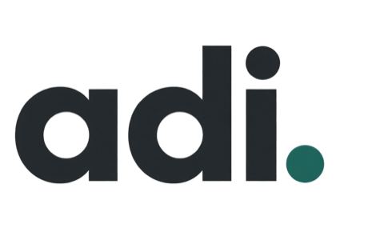

An independent project by Adi Rosenstock
Building the future of job search.
A new chapter for careers, powered by AI. Built with ambition. Kept under wraps until it’s ready.
In private development
TUKI is staying under wraps for now. If you’re curious, let’s start a conversation.